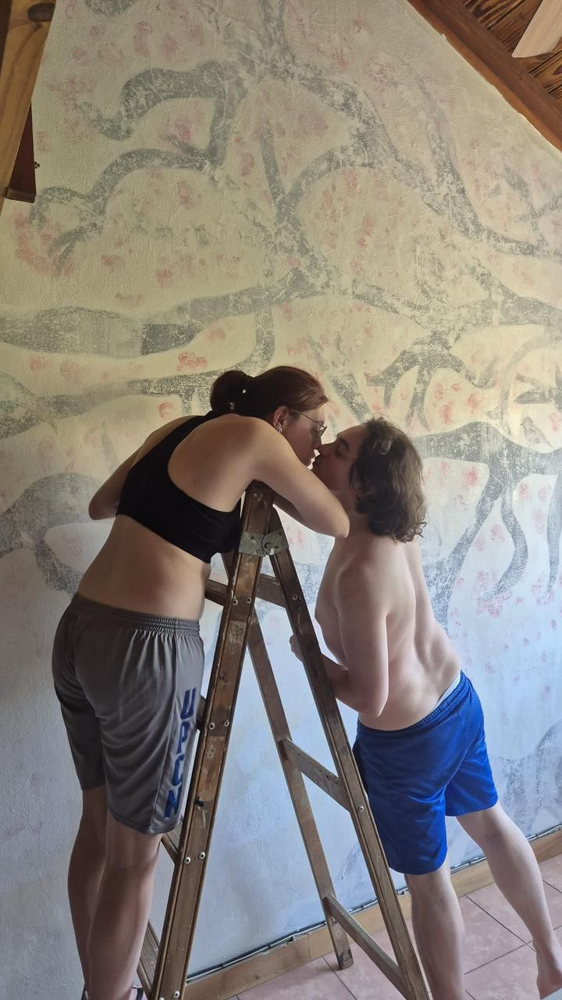

Qué pasó con el arte en el tiempo
11/10/19
Qué pasó con el arte en el tiempo. Algo que siempre nos trajo historias, ayuda a juntar momentos, lo más bello que tenemos y nadie lo observa.
Hoja 76
El arte debería seguir siendo uno de los lugares más vivos del tiempo: ahí donde el dolor, la belleza y lo indecible encuentran una forma de quedarse, cantar y no desaparecer.

11/10/19
Qué pasó con el arte en el tiempo. Algo que siempre nos trajo historias, ayuda a juntar momentos, lo más bello que tenemos y nadie lo observa.
22/09/25
No respiro, me quema el dolor
Esta asfixia me quiebra el corazón
el querer decirte lo que siento y callar
me desarma, me hunde y me hace sangrarMi lindo amor no correspondido
Mi chispa de fe
Prefiero mil puñaladas en la piel
antes que seguir a tu lado
fingiendo que no te quieroSubí tan rápido y olvidé respirar
me gritaste "No te vayas a quebrar"
Ahora que estoy perdido en el mar
Nadie viene, nadie me va a rescatarEl ruido se hizo niebla, se hizo cristal
y tu voz se apagó en mi oscuridad.
Me pierdo en la oscuridad
la verdad me desangra y no puedo escapar
Cada latido es un grito ahogado
que nunca vas a escucharSigo cayendo y me falta el aire
Mi pecho late como un secreto que arde
Las palabras que no pude gritar
Me perforan profundo y me vuelven a matarSi pudiera romper las cadenas
quemar el miedo y barrer las penas
Te diría que sos lo que siempre escondí
aunque el decirlo te aleje de mí— En la oscuridad — Leo, para vos mi amor.